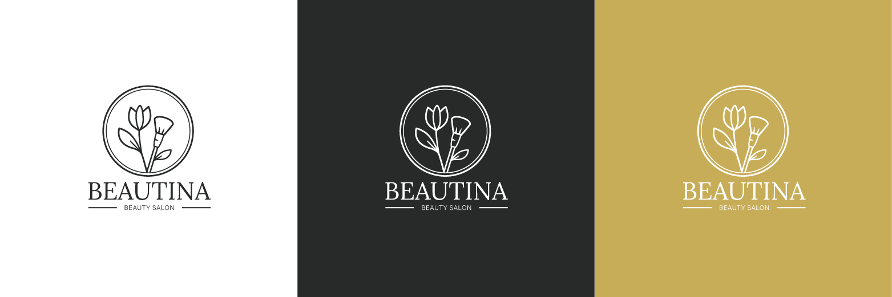

Beautina
Logo Design
Design of the logo for the makeup studio Beautina, run by makeup artist Tina.

Logo design
Beautina logo – presented in various versions.

Logo usage examples
Beautina logo and sample applications on the salon wall, business card, cosmetic bag, voucher, and signage outside the salon.